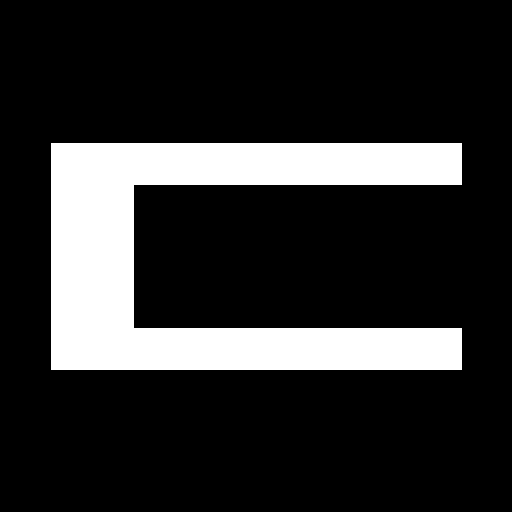

Verified evidence.
Safer decisions.
Dual Vision, CAD geometry, verified metrology, 21 specialist roles, digital factory simulation, cost optimization, and human-governed physical sorting.
Role count does not imply 21 separately trained or running LLMs.
Manufacturing evidence pipeline
What is implemented?
Decision policy
Disagreement requires human reinspection. Neither LLM majority voting nor synthetic CAD geometry can authorize a real release.
Local photo-to-reference comparator
Use your own images. They are processed **locally in this browser** by an intentionally simple pixel-difference baseline. This is NOT a calibrated defect model or NVIDIA inference.
A numerical difference is sensitive to lighting and pose. CAD files should first be rendered to a matched projection; a mere shape mask cannot certify 0.1 mm tolerances.
Try the user's original CAD sample

Slot nominal STL top orthographic silhouette (2D raster)
Tab nominal STL top orthographic silhouette
Seeded Digital Factory
4%5%Requires `uvicorn qualityrelay17.api:app` on same host. Offline static example below remains readable.
Registered comparisons
This reference deliberately does NOT demonstrate scientific superiority. Run physical experiments to test our hypotheses.
Example 30 × 1000 simulated specimens — not factory evidence
Quality / Metrology
Tools: check_clearance, check_visual, read_evidence; no direct authority over final PASS.
Design / Assembly
Review CAD revision, geometry fit, compatibility, check for independent risk evidence.
Inspection Planner
Rank next best inspection by expected decision loss, time and cost.
Nebius adapter status
Select an entitled model from the live Nebius model catalog and explicitly opt in before making paid API calls.
Model inputs
Costs are assumed until independent factory invoices/logs verify them.
The backed economics module prevents duplicate terminal defect outcomes.
Observed economic conclusion
Current reference policy makes the same HOLD/PASS decisions as conservative rules, but may spend more on additional inspections. Any claim of savings needs actual physical or pre-registered repeatable evidence.
Research / provenance
More sources, 12 architectures and license table in local docs/ directory. Prior owned ZIP versions remain in legacy/.